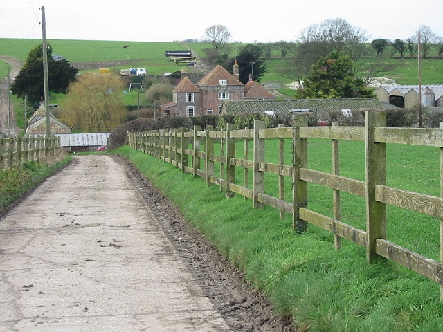

House of Marbles

Glassblowing demonstration
World's largest marble run
Toy museum
Pottery museum
We are open as normal with lots of safety precautions in place to help protect our staff & customers, including a one-way system, perspex barriers at tillpoints & sanitisation stations.
The Old Pottery
Pottery Road
Bovey Tracey
Devon
TQ13 9DS
| Monday | 9am - 5pm |
|---|
| Tuesday | 9am - 5pm |
|---|
| Wednesday | 9am - 5pm |
|---|
| Thursday | 9am - 5pm |
|---|
| Friday | 9am - 5pm |
|---|
| Saturday | 9am - 5pm |
|---|
| Sunday | 10am - 5pm |
|---|